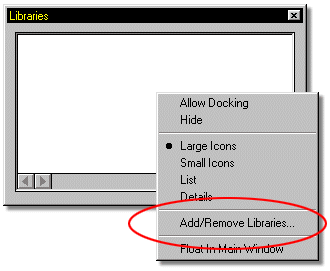
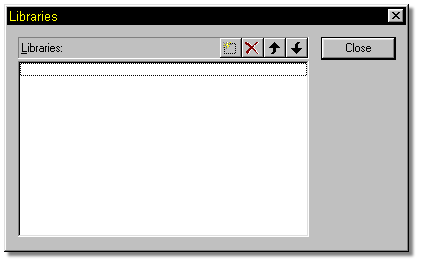

Libraries are used to organize a collection of files. These files could be
Models, Actions, Materials, or any combination of the above. Simply put,
Libraries are a shortcut to your favorite or often used files. Libraries are
independant of any project you have selected.
Libraries are used to organize a collection of files. These files could be
Models, Actions, Materials, or any combination of the above. Simply put,
Libraries are a shortcut to your favorite or often used files. Libraries are
independant of any project you have selected.
To create a new Library, right click the Libraries panel, then select Add/Remove Libraries from the pop up menu that appears.

The following window will open:

The four buttons across the top of the window allow you to make New libraries, Remove libraries, and organize the libraries up and down in the library list.
To make a new library, simply click the New Library button, then type in a name (you can click the … button to browse to a different location), and press Enter. A message “Library does not exist, do you want to create it?” will appear. If you click yes, the library will be created and appear in the list. Click the close button to return to MH3D. You should see your library in the Library window, and you can add models, etc. to it by simply dragging them and dropping them into the library.
Other Advanced Navigating Topics:
Status Bar View Controls
Create Icon
World Space
Snap Manipulator to Grid
Frame Toolbar
Embedding Options